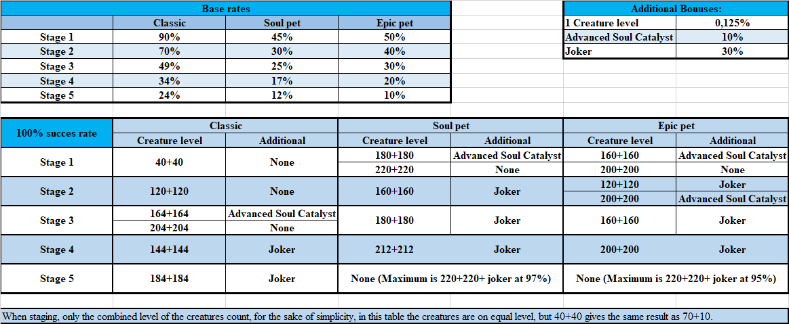

Tame 2 of the same base pet and combine them — that gives you a Stage 1. Combine 2 Stage 1s and you get a Stage 2. It always takes 2 pets of the same stage to make the next one.
Each step up requires twice as many base pets. The table below shows how that adds up if you want to reach Stage 5:
| Target Stage | What you combine | Total base pets needed |
|---|---|---|
| Stage 1 | 2 Base Pets (S0) | 2 |
| Stage 2 | 2 × Stage 1 | 4 |
| Stage 3 | 2 × Stage 2 | 8 |
| Stage 4 | 2 × Stage 3 | 16 |
| Stage 5 | 2 × Stage 4 | 32 |
This shows how many pets of each stage you need to build a single Stage 5 from scratch:
Getting to Stage 5 requires 32 base pets in total
Staging is not guaranteed. Each attempt has a chance to fail — and if it fails, you lose both pets. The chance depends on the pet type and gets lower at higher stages:
| Stage | Classic | Soul Pet | Epic Pet |
|---|---|---|---|
| Stage 1 | 90% | 45% | 50% |
| Stage 2 | 70% | 30% | 40% |
| Stage 3 | 49% | 25% | 30% |
| Stage 4 | 34% | 17% | 20% |
| Stage 5 | 24% | 12% | 10% |
You can increase the success rate by:
| Bonus Source | Rate Added |
|---|---|
| 1 Creature Level | +0.125% |
| Advanced Soul Catalyst | +10% |
| Joker | +30% |
To guarantee a successful stage, you need the right combination of creature levels and optional items. Both the combined level of the two pets and the additional item used determines whether you hit 100%.
| Stage | Creature Level (each) | Additional Item |
|---|---|---|
| Stage 1 | 40 + 40 | None |
| Stage 2 | 120 + 120 | None |
| Stage 3 | 164 + 164 | Advanced Soul Catalyst |
| 204 + 204 | None | |
| Stage 4 | 144 + 144 | Joker |
| Stage 5 | 184 + 184 | Joker |
| Stage | Creature Level (each) | Additional Item |
|---|---|---|
| Stage 1 | 180 + 180 | Advanced Soul Catalyst |
| 220 + 220 | None | |
| Stage 2 | 160 + 160 | Joker |
| Stage 3 | 180 + 180 | Joker |
| Stage 4 | 212 + 212 | Joker |
| Stage 5 | Not achievable — max is 220+220 + Joker at 97% | |
| Stage | Creature Level (each) | Additional Item |
|---|---|---|
| Stage 1 | 160 + 160 | Advanced Soul Catalyst |
| 200 + 200 | None | |
| Stage 2 | 120 + 120 | Joker |
| 200 + 200 | Advanced Soul Catalyst | |
| Stage 3 | 160 + 160 | Joker |
| Stage 4 | 200 + 200 | Joker |
| Stage 5 | Not achievable — max is 220+220 + Joker at 95% | |
Original reference table used for this guide:

Thanks to Gazi & LessHerpMoreDerp for providing the data.